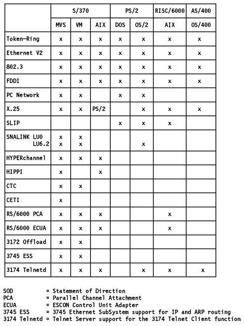

Table of Contents IBM 8260 Multiprotocol Intelligent Hub
The following table shows operating system support for selected connectivity options.  Figure: Connectivity Summary
Table of Contents Internet Access
 Table of Contents
Table of Contents  IBM
8260 Multiprotocol Intelligent HubTable of Contents IBM
8260 Multiprotocol Intelligent Hub
IBM
8260 Multiprotocol Intelligent HubTable of Contents IBM
8260 Multiprotocol Intelligent Hub Internet
Access
Internet
Access